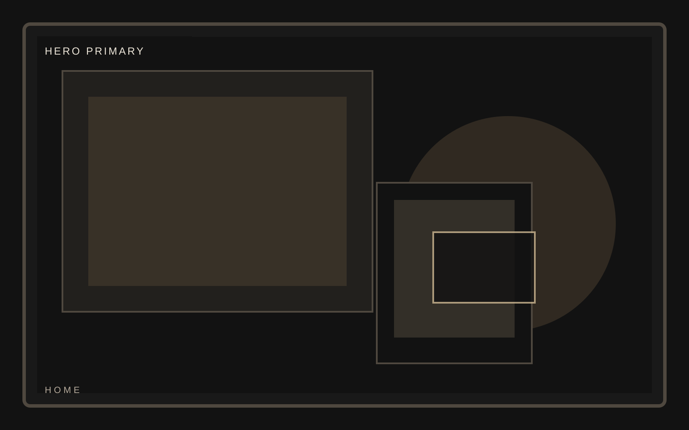
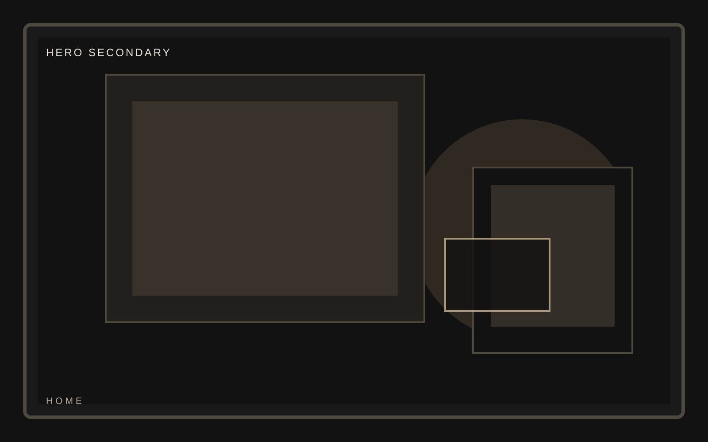
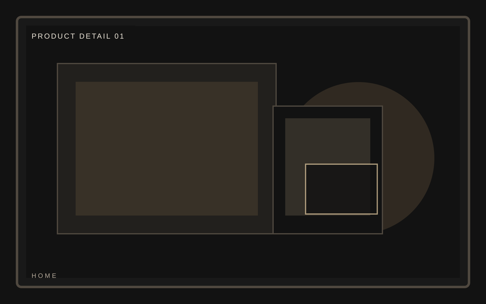
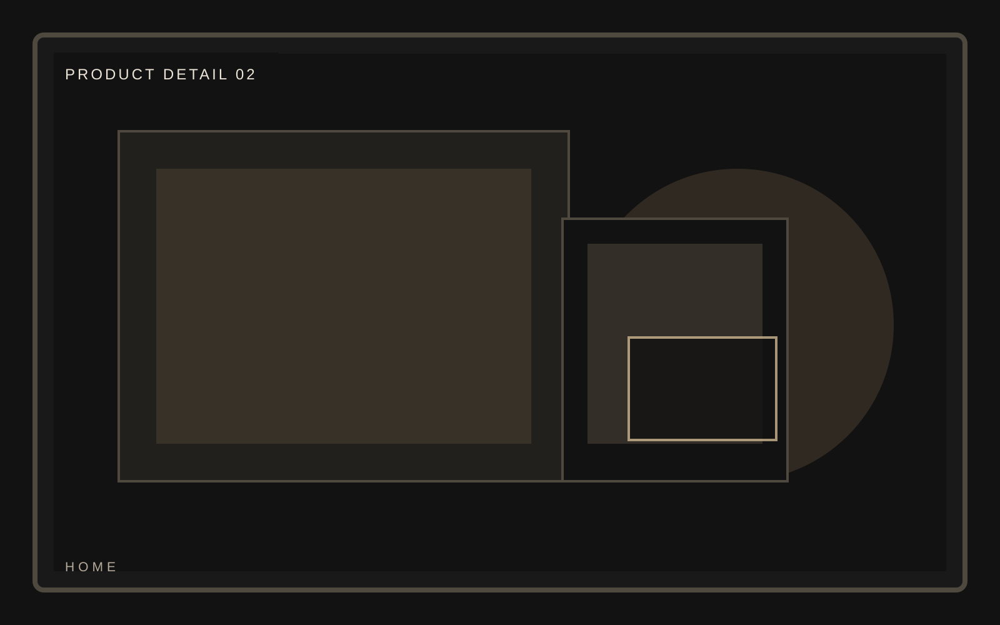
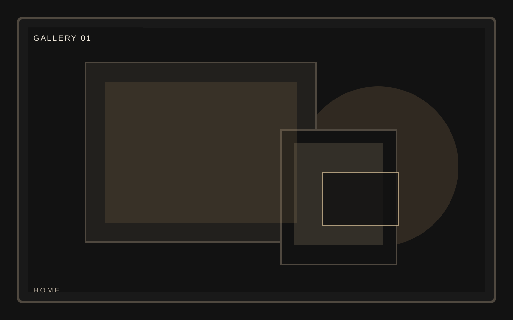
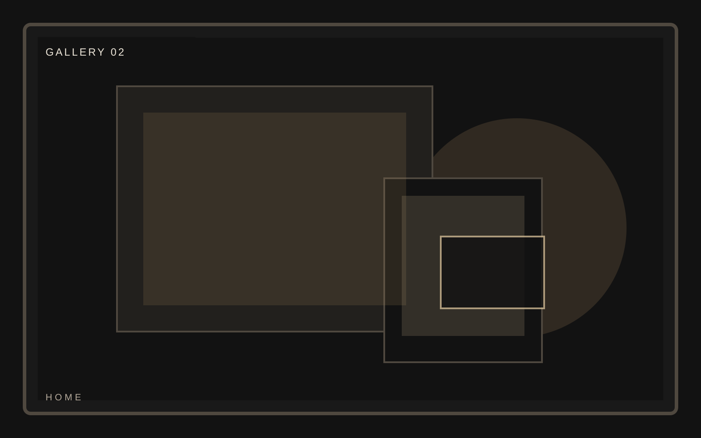

Edition
Low-volume release


Collector product launch
A premium physical product template built for limited releases, collector narratives, and high-intent inquiry rather than generic commerce tropes. The object should dominate the frame without turning the page into a store.
Collector product launch
Highlights should feel like controlled pressure on the object. Every supporting line should make the product feel more exact, not more advertised.
Collector product launch
Craft is where this template proves it is editorial rather than ecommerce. Use the section to slow the pace and increase attention.




Collector product launch
The gallery should feel curated and cinematic. Crops, rhythm, and negative space matter more than the raw count of images.
Collector product launch
Meridian treats inquiry cta like an editorial spread, using restraint, contrast, and collector-grade framing to keep pressure on the object. This home page stays consistent with the template system while giving this section its own visual weight.